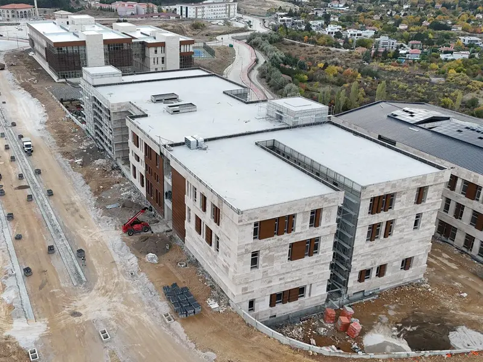

Merkezi Derslik Projesi
Yükseköğretim Kurulu bünyesinde yürütülen, farklı bloklardan oluşan derslik ve akademik kullanım alanlarını kapsayan bir eğitim kampüsü projesi.
İşverenYükseköğretim Kurulu (YÖK)
Alan26.000 m²
DurumDevam ediyor
